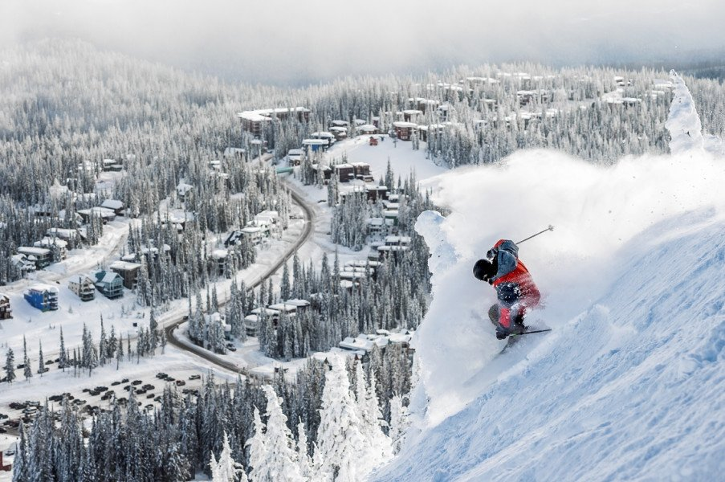
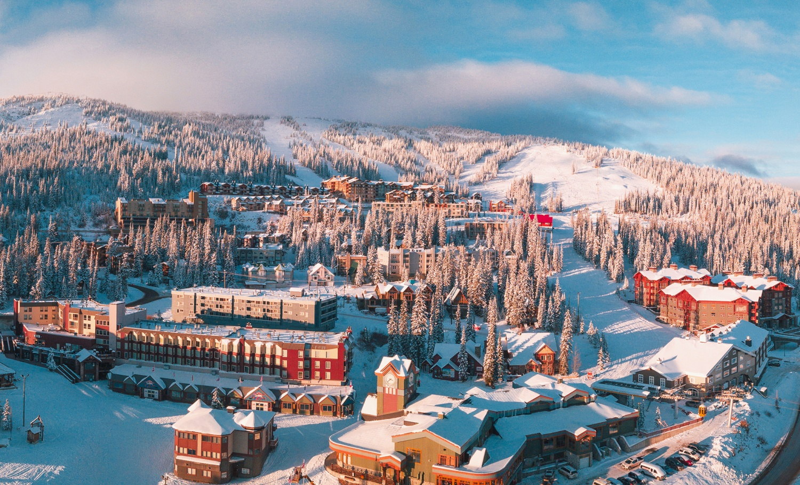

SilverStar Mountain Resort, nestled in the heart of British Columbia, Canada, is a winter
wonderland for outdoor enthusiasts and snow lovers alike. Boasting over 3,000 acres of skiable terrain and a
charming, colorful village, SilverStar offers an authentic and unforgettable alpine experience. With its
signature champagne powder snow, the resort is a haven for skiers and snowboarders of all levels, from
beginners to experts. Beyond the slopes, visitors can enjoy a vibrant atmosphere with a variety of dining
options, boutique shops, and cozy accommodations. SilverStar Mountain Resort truly captures the magic of the
Canadian Rockies, making it a must-visit destination for anyone seeking a memorable winter adventure in a
picturesque mountain setting.

Big White Ski Resort, located in the beautiful Okanagan Valley of British Columbia, Canada, is a premier
destination for winter enthusiasts seeking the perfect blend of adventure and relaxation. With its abundant,
light, and fluffy powder, Big White is a haven for snowsports lovers. The resort offers over 2,700 acres of
skiable terrain, including world-class groomed runs, exhilarating glades, and thrilling terrain parks,
making it a paradise for skiers and snowboarders. Beyond the slopes, visitors can explore a cozy alpine
village complete with a variety of restaurants, shops, and comfortable lodging options. Whether you're
carving down the pristine slopes, indulging in a hot cocoa by the fire, or taking in the breathtaking
scenery, Big White promises a memorable and invigorating winter experience in a charming mountain setting.